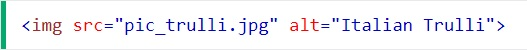
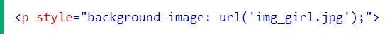

La siguiente página web muestra el desarrollo de aprendizaje frontend desde HTML5 en adelante,
partiendo desde la bases y siguiendo un diario de version, se ira actualizando conforme se avanza
en los diferentes conocimientos. Además de servir como repositorio, un backup de las diferentes
versiones que se podrán visualizar y ver los cambios afectados.
Headings
Formateo Texto
Estilizado Texto
HTML links
HTML Imagenes
HTML Listas
Acerca de
Los HEADINGS son usados especialmente para dar formato a títulos y subtitulos dentro
de una página web. siendo el h1
el mas importante y de mayor tamaño, hasta el h6
que
es el de menor importancia y menor tamaño.
Heading h1
Heading h2
Heading h3
Heading h4
Heading h5
Heading h6
Existen diferentes elementos para formatear un texto que se muestra en la página web, desde
la etiquetas p
para indicar un párrafo, hasta otras propias de formateo como b
para
indicar negrilla, em
para emfatizar un texto, o del
para borrar
texto, entre muchas otras listadas a continuación.
bTexto en negrilla
strongTexto importante
iTexto en cursiva
emTexto enfatizado
markTexto marcado
smallTexto opeque
del
insTexto insertado
subTexto subscripto
supTexto supercripto
El texto como como los títulos se pueden estilizar modificando fondo, color, tipo y tamaño
de texto, modificar el borde, entre otras opciones.
Texto con fondo blanco
Texto de color rojo
Texto con tipo de fuente
verdanaTexto tamaño 150%
Texto alineado centro
Texto alineado izquierda
Texto alineado derecha
Texto bordeado 2px
Los links en HTML permite vincular enlaces a páginas dentro de la misma página web, como Bookmarks, o enlaces a otras páginas. Un link también puede ser configurado con una imagen o algún otro elemento de HTML
SINTAXIS
Las imagenes permiten mejorar visualmente el aspecto de una página web, ya sea usando Imagenes
como background, elementos que redireccionen a otras páginas, etc.
SINTAXIS

Con image maps es posible crear zonas de una imagen que pueda ser clickeables. Para ellos se debe usar el atributo usemap y el valor anteponiendo un #
...usemap="#workmap">Para demarcar las áreas de la imagen, se usa la etiqueta <area> dentro de <map name="workmap">
El atributo <area shape=" " recibe 4 valores:
Un background puede ser especificado casi en cualquier elemento HTML por medio del atributo
style de CSS background-image

Por medio de CSS se pueden aplicar diferentes propiedades para modificar la imagen.
Con las listas de HTML se puede relaciones información en un grupo de ítems o listas, que pueden ser ordenadas de forma numerica, alfabetica o sin orden.
Designed by myriammira / Freepik
Versión 1.5:
- Fecha: 09/14/2022
Check Version History